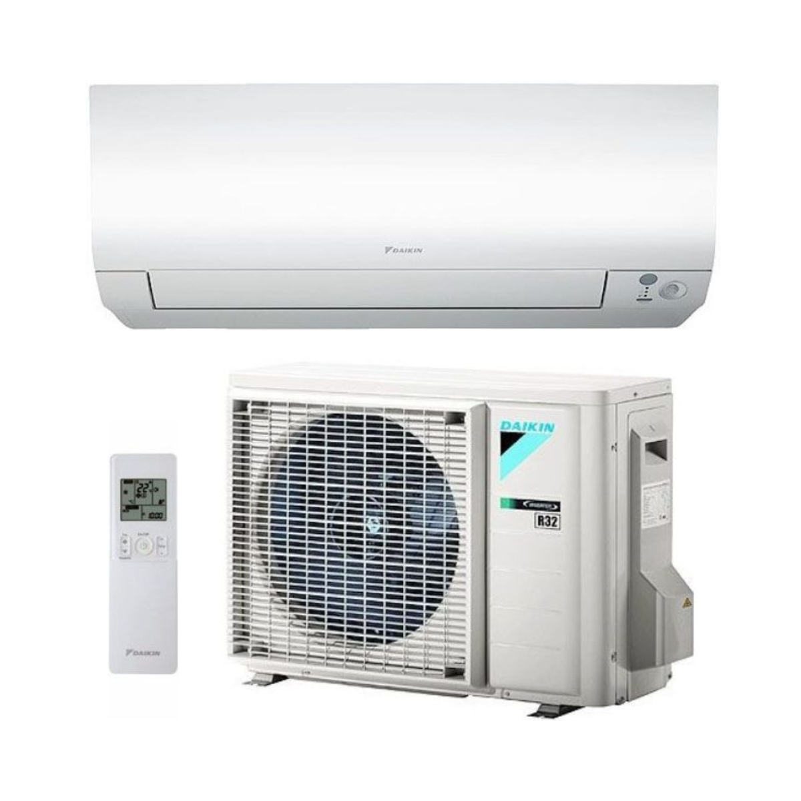
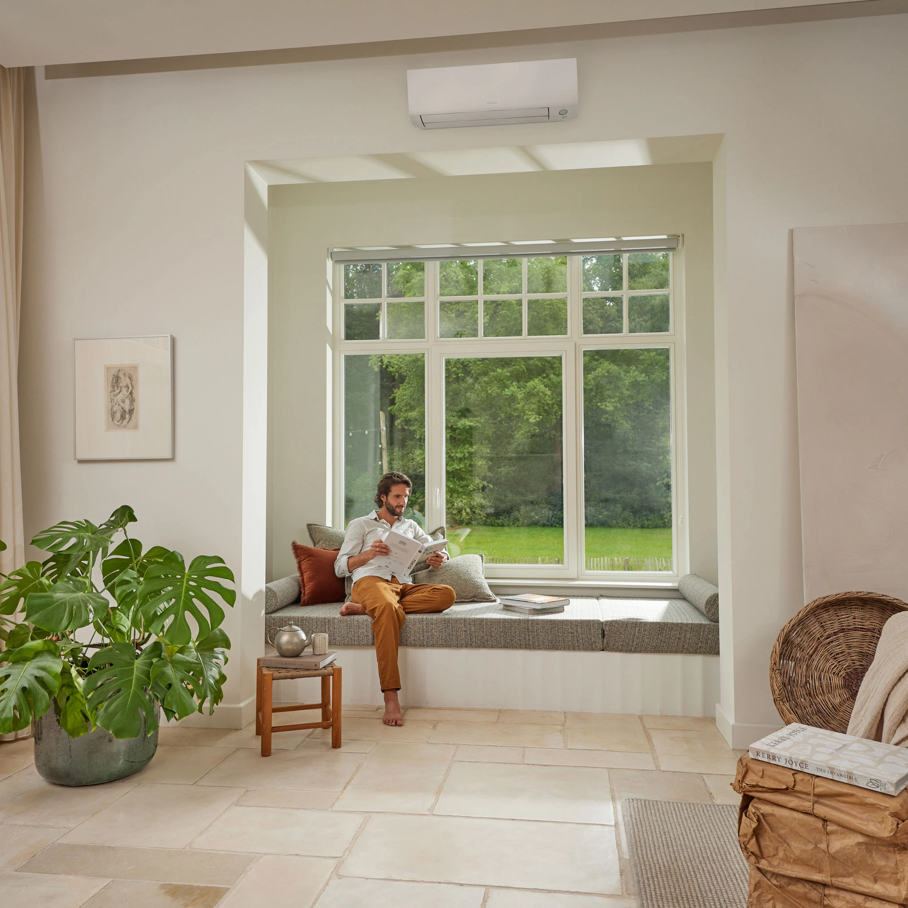

Single-split wandmodel
Daikin Perfera FTXM-R 2,5kW
vanaf € — incl. materiaal & standaard montage
- Koelvermogen: 2,5 kW • Verwarmingsvermogen: 2,8 kW
- Energieklasse (seizoens): SEER 8,7 / SCOP 5,1
- Stil: vanaf 19 dB(A) binnen • 46 dB(A) buiten
- Koelmiddel: R32
Specificaties
| Koelvermogen | 2,5 kW |
|---|---|
| Verwarmingsvermogen | 2,8 kW |
| SEER / SCOP | 8,7 / 5,1 |
| Geluidsniveau binnen | 19 dB(A) |
| Geluidsniveau buiten | 46 dB(A) |
| Afmetingen binnenunit | – |
| Afmetingen buitenunit | – |
| Koelmiddel | R32 |
| Geschikte ruimte | 25 m² |
Bron: Daikin Perfera Product profile.
Bekijk datasheet